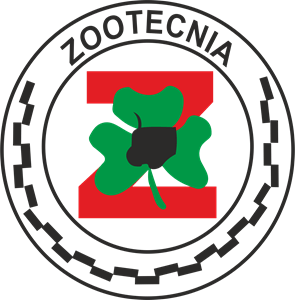

Zootecnia
É o campo do saber que se dedica ao
estudo da criação, conservação e produção animal,
com ênfase para os animais considerados domésticos,
na perspectiva de compreender suas relaçoẽs, suas
utilidades e os serviços úteis ao homem de forma
tecnicamente eficiente, economicamente viável,
socialmente justa, ambientalmente correta e
eticamente adequada